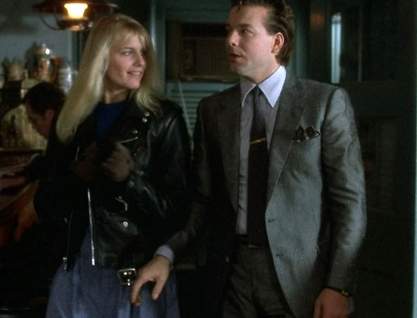
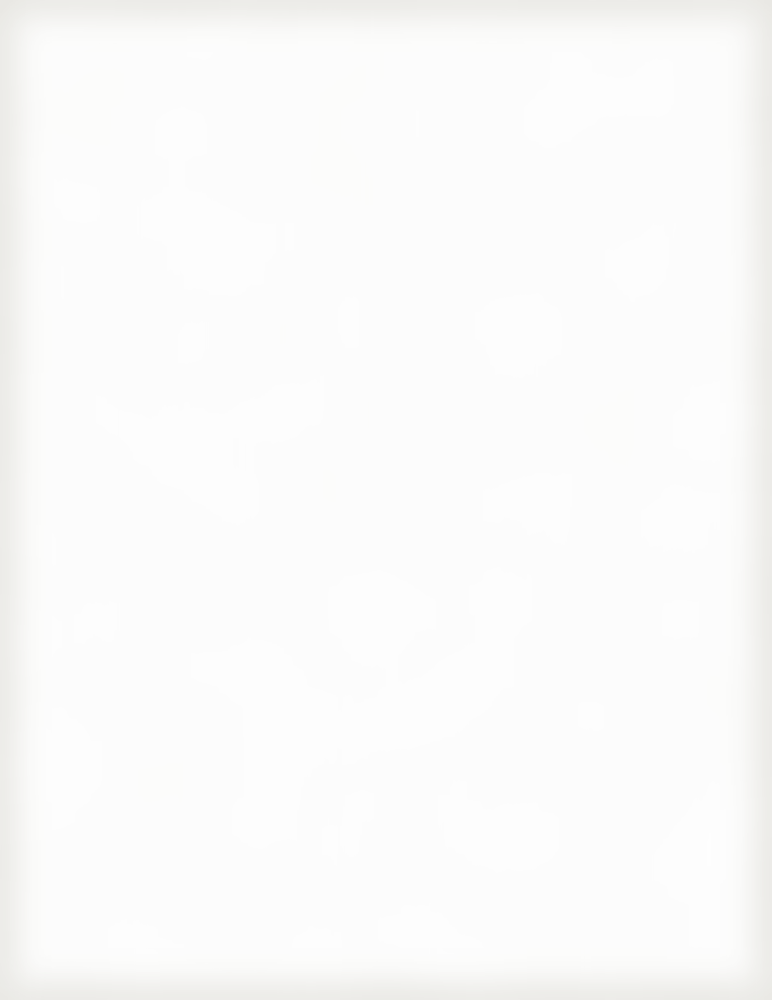

Benedetto's · Bill of fare
Page 85

Your captain on the floor, Friday night.
A word from the captain
Everybody here eats like the Pope.
Order the veal. Ask for the zabaglione and I'll whisk it at your table. Some day I'll have my own place. Till then, this one's yours.
Charlie
To begin
Antipasti
Clams oreganata4.50
On the half shell under garlic, oregano and parmesan crumbs.
Prosciutto e melone5.25
Ripe cantaloupe, sliced ham, bocconcini in basil oil.
From the bar
With a flourish
Americano4.00
Red aperitivo, sweet vermouth, soda and orange. Paulie's tab.
The main course
Secondi
Veal marsala15.00
Escalopes seared in butter, button mushrooms, glossy wine sauce.
Linguine vongole11.50
White clam sauce: littlenecks, garlic, parsley, olive oil.
Something sweet
Dolci
Zabaglione6.50
Marsala custard whisked warm at your table, over strawberries.
Cannoli2.75
Sweet ricotta, candied orange, chocolate chips.
WIN TICKETRACE 7
$20
TO WIN
HORSE No. 4
HORSE No. 4
Our horse. Can't lose. P.
Espresso 1.25. Prices subject to change. 84 Bleecker St. Form 1984.

